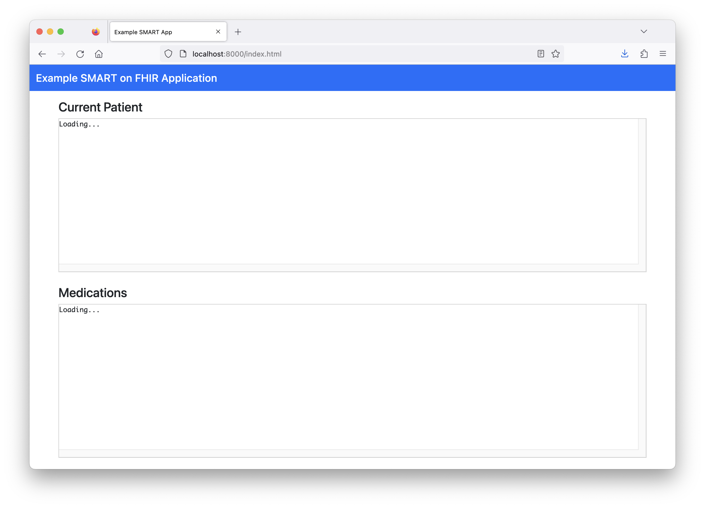

sequenceDiagram
accTitle: Diagram showing the workflow for a SMART on FHIR EHR launch
%%{init:{'sequence':{'messageFontSize': 30, 'actorFontSize': 30}}}%%
participant A as localhost:8000/launch.html
participant B as launch.smarthealthit.org
participant C as localhost:8000/index.html
participant D as FHIR Server
B ->> B: Launch triggered via test website
B ->> A: Launch requested
A ->> B: Authorization request
B ->> B: Dummy provider log-in and patient selection
B ->> C: Authorization granted
C ->> B: Access token request
B -->> C: Access token response
C ->> D: Request Patient
D -->> C: Response with Patient JSON
C ->> D: Request MedicationRequests
D -->> C: Response with MedicationRequest JSON
Technical Details
This module is meant for technical users who would like to start working hands-on with SMART on FHIR. Read the SMART on FHIR Introduction before continuing.
1 High-level technical considerations
1.2 Software libraries
Open-source libraries exist in many programming languages to help developers work with FHIR data and SMART App Launch.
docs.smarthealthit.org lists the following software libraries that support SMART App Launch:
JavaScript or TypeScript: Client-side and server-side library with support for SMART App Launch
Node.js from Vermonster: An alternative Node.js implementation
Python: Server-side Python library with support for SMART App Launch
.NET: FHIR client library from Firely
HL7®’s Confluence site also has a list of FHIR-related software libraries.
You can create a SMART on FHIR application without relying on third-party libraries, but using a third-party library will likely save development time.
1.3 Security and privacy
FHIR servers will likely return health data that can be linked to an individual. If so, rules around handling Protected Health Information (PHI) apply. Your institution’s IRB will also have policies for handling sensitive patient data used in research.
Determine the security and privacy approach for health data early in your design process before working with any real patient data. You can use synthetic data and a test FHIR server during development and testing.
1.4 Human-centered design
If you are developing a user-facing application, consider a human-centered design approach. From ISO 9241-210:2019:
Human-centered design is an approach to interactive systems development that aims to make systems usable and useful by focusing on the users, their needs and requirements, and by applying human factors/ergonomics, and usability knowledge and techniques. This approach enhances effectiveness and efficiency, improves human well-being, user satisfaction, accessibility and sustainability; and counteracts possible adverse effects of use on human health, safety and performance.
For more information on human-centered design in healthcare research, see Göttgens and Oertelt-Prigione (2021).
2 Example SMART on FHIR app
Follow the steps below to create a simple browser-based SMART on FHIR app (based on this tutorial) using JavaScript. This example will use SMART App Launch’s EHR Launch flow.
2.1 Prerequisites
You need:
- a text editor
- a way to run a local HTTP server (described below)
- familiarity with HTML, JavaScript, and the command line
2.2 Instructions
Below are the instructions for getting an example SMART on FHIR app running locally. We provide a detailed explanation of how this works after the instructions.
Step 1: Create a project folder and files
Create a folder with two files:
launch.htmlindex.html
Step 2: Create the launch page
Add the following content to launch.html:
<!DOCTYPE html>
<html>
<head>
<meta charset="UTF-8" />
<title>Launch My APP</title>
<!-- Use the SMART on FHIR JavaScript library to handle authorization -->
<script src="https://cdn.jsdelivr.net/npm/fhirclient/build/fhir-client.js"></script>
</head>
<body>
<script>
FHIR.oauth2.authorize({
// The client_id that you should have obtained after registering a client at
// the EHR.
//
// Note that this can be an arbitrary string when testing with
// http://launch.smarthealthit.org.
clientId: "my_web_app",
// The scopes that you request from the EHR. In this case we want to:
// launch - Get the launch context
// openid & fhirUser - Get the current user
// patient/*.read - Read patient data
scope: "launch openid fhirUser patient/*.read",
// Typically, if your redirectUri points to the root of the current directory
// (where the launchUri is), you can omit this option because the default value is
// ".". However, some servers do not support directory indexes so "." and "./"
// will not automatically map to the "index.html" file in that directory.
redirectUri: "index.html"
});
</script>
</body>
</html>Note that the FHIR.oauth2.authorize() method will automatically redirect back to the authorization server (launch.smarthealthit.org for this example). This means that you will never see this page rendered in your browser.
Step 3: Create the “app” page
Add the following contents to index.html. This will be the testing “app” for this example:
<!DOCTYPE html>
<html lang="en">
<head>
<meta charset="utf-8">
<meta name="viewport" content="width=device-width, initial-scale=1">
<title>Example SMART App</title>
<!-- Use the SMART on FHIR JavaScript library -->
<script src="https://cdn.jsdelivr.net/npm/fhirclient/build/fhir-client.js"></script>
<!-- Use Bootstrap for styling -->
<link rel="stylesheet" href="https://cdn.jsdelivr.net/npm/bootstrap@5.2.3/dist/css/bootstrap.min.css">
<style>
/* Additional styling for text boxes that will show JSON data */
#patient, #meds {
font-family: Monaco, monospace;
white-space: pre;
font-size: 13px;
height: 38vh;
overflow: scroll;
border: 1px solid #CCC;
}
</style>
</head>
<body>
<nav class="navbar bg-primary" style="margin-bottom: 2vh">
<div class="container-fluid">
<span class="navbar-brand mb-0 h1 text-white">Example SMART on FHIR Application</span>
</div>
</nav>
<div class="container">
<h4>Current Patient</h4>
<div id="patient">Loading...</div>
<br/>
<h4>Medications</h4>
<div id="meds">Loading...</div>
<script type="text/javascript">
FHIR.oauth2.ready().then(function(client) {
// Render the current patient (or any error)
client.patient.read().then(
function(pt) {
document.getElementById("patient").innerText = JSON.stringify(pt, null, 4);
},
function(error) {
document.getElementById("patient").innerText = error.stack;
}
);
// Get MedicationRequests for the selected patient
client.request("/MedicationRequest?patient=" + client.patient.id, {
resolveReferences: [ "medicationReference" ],
graph: true
})
// Reject if no MedicationRequests are found
.then(function(data) {
if (!data.entry || !data.entry.length) {
throw new Error("No medications found for the selected patient");
}
return data.entry;
})
// Render the current patient's medications (or any error)
.then(
function(meds) {
document.getElementById("meds").innerText = JSON.stringify(meds, null, 4);
},
function(error) {
document.getElementById("meds").innerText = error.stack;
}
);
}).catch(console.error);
</script>
</div>
</body>
</html>Step 4: Run a local web server
Open a command prompt window and go to the folder you created.
Run a command to start a local web server on port
8000. For example, if you have Python 3 on your system run:python3 -m http.server 8000For Python 2, run:
python -m SimpleHTTPServer 8000
For more information on using Python as a local web server, review Mozilla’s test server guide. If you don’t have Python, you can use Ruby or a Node package.
Once you are running the server, navigate to http://localhost:8000. You should see a page that looks like this:

Note: data will not load by opening index.html in your browser. To load data, you must go through the EHR launch flow (see next step).
Step 5: Test with launch.smarthealthit.org
Go to https://launch.smarthealthit.org, enter http://localhost:8000/launch.html for in the “App’s Launch URL” field, and click “Launch”.
You should see the following happen:
2.3 App launch process explanation
Here’s a visual diagram of the process that occurs when you launch your example application with launch.smarthealthit.org:
Here are the details of this process:
You trigger the application launch by clicking “Launch” on
launch.smarthealthit.org. This simulates an EHR user triggering a SMART on FHIR app launch using a link in the EHR.In this case,
launch.smarthealthit.orgredirects your browser tohttp://localhost:8000/launch.html?iss=http%3A%2F%2Flaunch.smarthealthit.org%2Fv%2Fr4%2Ffhir&launch=....The SMART App Launch documentation explains the two parameters in this URL:
iss: Identifies the EHR’s FHIR endpoint, which the app can use to obtain additional details about the EHR including its authorization URL.launch: Opaque identifier for this specific launch and any EHR context associated with it. This parameter must be communicated back to the EHR at authorization time.
http://localhost:8000/launch.htmlloads in your browser, andFHIR.oauth2.authorize()is called with the options defined inlaunch.html’s source code. Theauthorize()method obtains an authorization code from the testing server’s “authorize” endpoint. In this case, it does this by triggering a browser redirect tohttps://launch.smarthealthit.org/v/r4/auth/authorizewith a number of parameters.Your browser loads a page on the
launch.smarthealthit.orgserver simulating provider log-in and patient selection. (Note: If this application was being used in a real-world EHR, the provider would be logged in through the EHR and the selected patient would be whichever patient the provider was viewing when they launched the app in the EHR.)This dummy flow gathers the information needed for
launch.smarthealthit.orgto provide the example application with the authorization code. It does this by redirecting your browser tohttp://localhost:8000/index.html?code=...&state=.... It knows to take you tohttp://localhost:8000/index.htmlbecause you specified the parameterredirectUri: "index.html"in the source code oflaunch.html.http://localhost:8000/index.htmlloads in your browser and callsFHIR.oauth2.ready(). This creates aClientinstance that handles obtaining and refreshing the OAuth access token needed to authorize access to the FHIR server, and making requests to the FHIR server with the proper headers.In this case, a call is made to
https://launch.smarthealthit.org/v/r4/auth/token, which responds with the authorization token that must be passed along with any requests for FHIR data.http://localhost:8000/index.htmlcallsclient.patient.read()to request the Patient resource instance from the FHIR server (in this case, this results in a call tohttps://launch.smarthealthit.org/v/r4/fhir/Patient/39234650-0229-4aee-975b-c8ee68bab40b) and displays the raw JSON returned by the server. Note that theread()method automatically includes the authorization token from (4).http://localhost:8000/index.htmlcallsclient.request(...)to request the MedicationRequest resource instances from the FHIR server (in this case, this results in a call tohttps://launch.smarthealthit.org/v/r4/fhir/MedicationRequest?patient=39234650-0229-4aee-975b-c8ee68bab40b) and displays the raw JSON returned by the server. Note that therequest()method automatically includes the authorization token from (4).
Now that the application has access to FHIR data, common front-end web development techniques could be used to create an application that utilizes this data.
This example assumes a SMART on FHIR-enabled server (like the https://launch.smarthealthit.org testing server used above). See this tutorial for more information on setting up a SMART on FHIR-enabled server.
Additionally, Cerner’s browser-based app tutorial provides more detail on setting up a browser-based SMART on FHIR application.
3 Additional resources
Several resources are listed at docs.smarthealthit.org, including additional tutorials, test environments, vendor sandboxes, and sample apps.
There are also a few recommendations for support on docs.smarthealthit.org:
For developers interested in using SMART on FHIR with Bulk Data Access, there is a tutorial on using Bulk Data Access to export data to access via SQL.
References
Göttgens, Irene, and Sabine Oertelt-Prigione. 2021. “The Application of Human-Centered Design Approaches in Health Research and Innovation: A Narrative Review of Current Practices.” JMIR mHealth and uHealth 9 (12): e28102. https://doi.org/10.2196/28102.